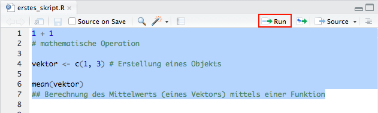
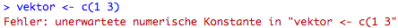
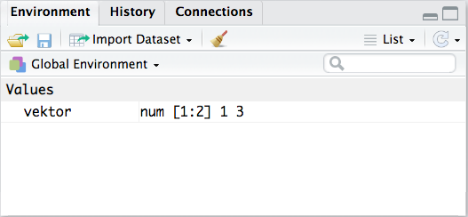
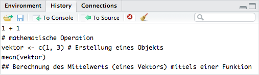
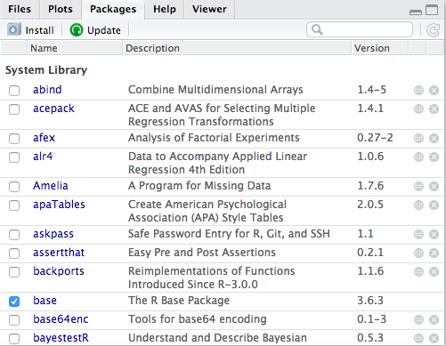
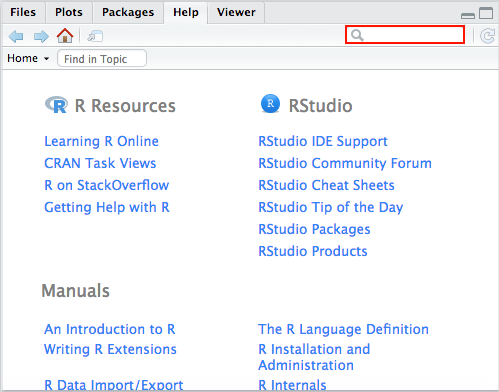

4 Einführung in RStudio
Im Rahmen dieses Kapitels schauen wir uns an, wie die Benutzeroberfläche der Entwicklungsumgebung RStudio aufgebaut ist und wie sie uns den Umgang mit der (grundlegenden) Software R erleichtert. Wir lernen die vier grundlegenden Bereiche (Panels) von RStudio kennen und werden uns besonders die R-Dokumentation genauer anschauen. In dieser finden wir viele wertvolle Informationen zu Funktionen. Am Ende finden wir noch eine Übersicht über Kurzbefehle, die uns die Arbeit mit R zusätzlich erleichtern.
Es ist von Vorteil, wenn wir die Einführung in R, in der Funktionen und Pakete, sowie die Speicherung von Daten erklärt werden, bereits durchgearbeitet haben.
Achtung: Voraussetzung zur Bearbeitung des Kapitels ist, dass wir R und RStudio installiert haben.
Weiterführend bietet es sich an, das Kapitel zum Daten einlesen anzuschauen.
4.1 Allgemeines zu RStudio
RStudio ist eine integrierte Entwicklungsumgebung (integrated development environment, IDE) für die Statistiksoftware R. Eine IDE bietet uns verschiedene Werkzeuge an, die uns den Umgang mit einer (grundlegenden) Software erleichtern.
In R steht uns standardmäßig nur die Konsole und das Skript zur Verfügung.
In RStudio gibt es u.a. zusätzlich:
- Code Hervorhebung
In Abhängigkeit davon, um was für Code es sich handelt (z.B. Funktionen, Datentyp, bestehende Objekte, Kommentare; Fehlermeldungen) wird dieser farblich verschieden im Skript und auch in der Konsole hervorgehoben. - Befehlszeilenergänzung (Autovervollständigung)
Wenn wir anfangen, Code einzutippen, bekommen wir bereits Vorschläge, welche Funktionen oder bestehenden Objekte wir meinen könnten. Wenn wir mit der Maus über eine vorgeschlagene Funktion fahren, bekommen wir außerdem eine kurze Erklärung, was diese macht und welche Parameter sie besitzt. Wir können auf die Vorschläge klicken, um unseren Code (d.h. den Namen der Funktion oder des Objekts) automatisch vervollständigen zu lassen. Die Befehlszeilenergänzung können wir sowohl in der Konsole als auch im Skript nutzen. - Code Diagnostik
Wenn wir Code im Skript schreiben, bekommen wir schon vor der Ausführung Hinweise auf Probleme bzw. Unvollständigkeiten. Unser Skript muss dazu aber bereits gespeichert sein. Auf die Code Diagnostik gehen wir im Kapitel zu Fehlermeldungen noch etwas detaillierter ein.
Beim ersten Öffnen sieht RStudio folgendermaßen aus:
Zu allererst öffnen wir ein neues Skript, in das wir unseren Code schreiben werden. Dazu gehen wir in der oberen Leiste ganz links auf und dann auf R Script.
Nun gliedert sich die Entwicklungsumgebung RStudio in vier verschiedene Bereiche:
In das Skript schreiben wir unseren Code. In der Konsole wird dieser ausgeführt und die Ergebnisse angezeigt. Bestehende Objekte sehen wir im Environment. Eine Übersicht unserer Pakete finden wir unter Packages und Informationen zu R und zu Funktionen finden wir unter Help.

Die verschiedenen Bereiche (Panels) und ihre (für uns wichtigsten) Features schauen wir uns im Folgenden einmal genauer an.
4.1.1 Skript
Hier schreiben wir unseren Code und Kommentare rein.

Alle Zeichen, die in einer Zeile nach einem # erscheinen, gelten als Kommentar. Von der Kommentarfunktion sollten wir ausgiebig Gebrauch machen. So können wir (und Andere) zu einem späteren Zeitpunkt noch nachvollziehen, was genau wir gemacht haben.
Unsere Skripte sollten wir regelmäßig (oder spätestens vor Beendigung des Programms) speichern. Um die Datei anzulegen gehen wir in der oberen Leiste auf File > Save as…. Wir geben der R-Datei einen Namen und wählen einen Speicherort.
Beim allerersten Speichern müssen wir außerdem die Zeichen-Enkodierung festlegen. Wir wählen UTF-8, das ist die am häufigsten genutzte Kodierung für Unicode-Zeichen.
Ab dann können wir unser Skript über File > Save speichern.
Unseren Code führen wir aus, indem wir ihn markieren und auf Run klicken.

4.1.2 Konsole
Hier bekommen wir den Output unseres Codes ausgegeben. Kommentare werden nicht ausgeführt, sondern nur wiedergegeben.

Wir bekommen in der Konsole einen Hinweis, wenn wir eine eindeutig unvollständige Funktion, d.h. wenn wir nur am Ende einer Funktion die schließende Klammer vergessen haben, ausführen wollen. Dann wird uns in der Konsole in der nachfolgenden Zeile ein + ausgegeben.

In der Konsole bekommen wir manchmal auch Fehler- (error) und Warnmeldungen (warning) sowie andere Informationen zu einer Funktion (message) angezeigt.
Wenn wir einen Fehler in einer Funktion gemacht haben, wird die Ausführung unterbrochen und wir bekommen eine Fehlermeldungen. Wenn wir z.B. ein Komma zwischen den Elementen in c() vergessen hätten, bekämen wir folgende Fehlermeldung:

Mehr Informationen zur Interpretation von Fehlermeldungen finden wir im gleichnamigen Kapitel.
Der Inhalt der Konsole wird nach jedem Schließen des Programms gelöscht und kann nicht ohne weiteres gespeichert werden. Deswegen ist es wichtig, die eigene Arbeit in Skripten zu speichern.
4.1.3 Environment & History
Im Environment sehen wir alle Objekte, die derzeit in R geladen sind. Wenn wir (externe) Datensätze einlesen, sehen wir diese auch hier. Wir bekommen außerdem weitere Informationen zu den Objekten und wir sehen ggf. die ersten Elemente.
Beispielsweise haben wir gerade das Objekt vektor erstellt, welches uns hier angezeigt wird.

Wir sehen, dass es sich um einen numerischen Vektor mit zwei Elementen, 1 und 3, handelt.
Was für Informationen wir zu einem Objekt angezeigt bekommen ist abhängig von seiner Datenstruktur. Schauen wir uns das einmal am Beispiel der Objekte, die wir im Abschnitt zu Daten im Kapitel Einführung in R erstellt haben, an.

Die Objekte werden in zwei Kategorien aufgeteilt:
- Unter Data finden wir Data Frames, Listen und Matrizen. Bei allen bekommen wir die Länge der einzelnen Dimensionen angezeigt (Dataframe: obs. = Zeilen, variables = Spalten; Matrix: [Zeilen, Spalten]; Liste: List of …). Data Frames werden mit einem vorangestellten markiert. Bei Matrizen bekommen wir zusätzlich die ersten Elemente angezeigt. Durch Klicken können wir uns diese Objekte im Data Viewer anschauen (alternativ zu
View()). - Unter Values finden wir Vektoren. Wir bekommen die selben Informationen angezeigt, die uns
str(vektor)gibt: Datentyp, Länge, ersten 10 Elemente. Bei Faktoren wird uns de facto nicht der Datentyp sondern die -struktur angezeigt. Der Datentyp ist eigentlich auch irrelevant, weil es nur eine diskrete Anzahl an Ausprägungen gibt, die uns auch angezeigt wird. Die Länge des Faktors erfahren wir auch nicht.
Zum Löschen aller Objekte können wir auf  klicken (alternativ zu
klicken (alternativ zu rm(list=ls())).
Zusätzlich können wir über das Environment auch externe Datensätze einlesen. Wie wir das machen, schauen wir uns im Kapitel zum Daten einlesen im Abschnitt dazu an.
In der History sehen wir den zuletzt ausgeführten Code.

Mit To Source bekommen wir den markierten Code in unser Skript; mit To Console in die Konsole.
Der Vorteil gegenüber der Konsole ist, dass der Inhalt der History nicht mit Beenden einer R-Session gelöscht wird, sondern wir auf den Code zugreifen können bis dieser explizit gelöscht wird (auch mit einem ).
4.1.4 Files, Plots, Packages, Help & Viewer
Im Folgenden werden wir hauptsächlich die Reiter Packages und Help besprechen. Auf die Dokumentation, auf die wir mit letzerem direkt in RStudio (anstatt im Browser) zugreifen können, gehen wir besonders stark ein.
Unter Packages sehen wir die Standardpakete und die von uns installierten Add-On Pakete.

Wir sehen eine kurze Beschreibung des Pakets und seine Versionsnummer. Im Kästchen ganz links sehen wir außerdem, ob Pakete derzeit geladen sind. Standardpakete sind immer geladen; Add-On Pakete müssen wir bei jeder Session neu laden (wenn wir sie nutzen wollen).
Mehr Informationen zum Installieren, Laden und Aktualisieren von Paketen mit Funktionen sowie der Entwicklungsumgebung R finden wir im gleichnamigen Kapitel.
Unter Files sehen wir die Ordner(struktur) auf unserem Rechner. Im Kapitel zu Daten einlesen erfahren wir, wie wir diesen bereich nutzen können.
Unter Plots werden (von uns erstellte) Grafiken angezeigt; unter Viewer (von uns erstellte) Tabellen.
Über Help bekommen wir Zugang zur R-Dokumentation, welche wir uns nachfolgend etwas genauer anschauen wollen.
4.1.4.1 R-Dokumentation
Die R-Dokumentation bietet uns umfassende Hilfe zum Umgang mit R im Allgemeinen und zu Funktionen an.

Den Namen der Funktion geben wir in das Suchfeld ein. Alternativ können wir auch die Funktionen help(funktion) oder ?funktion nutzen. Wenn wir auf  klicken, öffnet sich die Dokumentationsseite in einem neuen Fenster, was die Nutzung wesentlich übersichtlicher gestaltet.
klicken, öffnet sich die Dokumentationsseite in einem neuen Fenster, was die Nutzung wesentlich übersichtlicher gestaltet.
Neben der Informationen, aus welchem Paket eine Funktion stammt, finden wir hier zumeist folgende Abschnitte:
- Description: Beschreibung, was die Funktion macht
- Usage: Funktionsdefinition
(Parameter der Funktion und ggf. Defaults) - Arguments: Beschreibung der Parameter und ihrer möglichen Argumente
- Details: detaillierte Beschreibung zur Nutzung der Funktion und etwaigen Sonderfällen
- See Also: verwandte Funktionen (meist aus dem gleichen Paket)
- Examples: Beispiele zur Nutzung der Funktion
Im Folgenden schauen wir uns die R-Dokumentation exemplarisch für die Funktion matrix() an.
Dazu öffnen wir die dazugehörige R-Dokumentations-Seite, indem wir matrix in das Suchfeld eingeben, oder eine der Hilfe-Funktionen, help(matrix) oder ?matrix, ausführen. Folgende Seite sollte sich nun öffnen:

Oben links sehen wir, dass die Funktion aus dem Basispaket base stammt.
4.1.4.1.1 Description
Man findet hier zu einer Funktion bzw. einem Set an verwandten Funktionen kurze Ausführungen zum Zweck einer Funktion.
Die Funktion matrix erstellt eine Matrix von einem gegebenem Set an Werten. Es gibt noch zwei verwandte Funktionen - as.matrix und is.matrix - welche ein Objekt in eine Matrix umwandeln bzw. überprüfen, ob das (als Argument) übergebene Objekt eine Matrix ist.
4.1.4.1.2 Usage
Hier sehen wir die Funktionsdefinition. Diese zeigt, welche Parameter die Funktion besitzt und ggf. welche dieser Parameter voreingestellte Argumente (Defaults) besitzen.

Per Default …:
- … wird an
datanur einNA(Missing) übergeben - … gibt es eine Reihe (
nrow=1) - … und eine Spalte (
ncol=1) - … wird die Matrix spaltenweise (d.h. von oben nach unten) mit Werten befüllt (
byrow=FALSE) - … gibt es keine Spalten- und Zeilenbenennung (
dimnames=NULL)
Um Defaults besser zu verstehen, führen wir matrix() ohne Spezifikation der Parameter aus und schauen uns den Output an.
[,1]
[1,] NABis auf byrow=FALSE können wir so alle Voreinstellungen im Output nachvollziehen. Dessen Funktionsweise sieht man erst bei mehreren Elementen in einer Matrix.
4.1.4.1.3 Arguments
Argumente sind Einstellungen, die wir für eine Funktion festlegen können. In der R-Dokumentation sieht man links den Namen des Arguments (z.B. byrow) und rechts eine Beschreibung dazu (z.B. logical) verbunden mit verschiedenen Einstellungsoptionen (z.B. FALSE - spaltenweise Befüllen der Matrix).
4.1.4.1.4 Details
Im Abschnitt Details stehen weitere Detailinformationen zur Nutzung der Funktion.
1. Abschnitt von matrix():
Wir erfahren hier, dass wenn nrow (Zeilenanzahl) oder ncol (Spaltenanzahl) nicht festgelegt wird, versucht wird, auf dessen Länge zu schließen. Das schauen wir uns mal an einem Beispiel an.
# Beispiel 1:
matrix(data=c(1,1,2,2,3,3,4,4,5,5), nrow=5) [,1] [,2]
[1,] 1 3
[2,] 1 4
[3,] 2 4
[4,] 2 5
[5,] 3 5Wir haben einen Vektor mit 10 Elementen reingegeben und nrow=5 festlegt. Daraus kann R schließen, dass die Matrix zwei Spalten (ncol=2) haben muss.
2. Abschnitt matrix():
Wenn die Anzahl der Elemente, die wir an data übergeben, kleiner ist, als die Anzahl der gewünschten Elemente in Matrix (nrow x ncol), dann wird data recycled. Das bedeutet, dass data nochmal genutzt wird, um die Matrix zu befüllen.
# Beispiel 2:
matrix(data=c(1,1,2,2,3), nrow=3, ncol=2)Warning in matrix(data = c(1, 1, 2, 2, 3), nrow = 3, ncol = 2): data length [5]
is not a sub-multiple or multiple of the number of rows [3] [,1] [,2]
[1,] 1 2
[2,] 1 3
[3,] 2 1In Beispiel 1 und 2 können wir auch die Auswirkung des Default byrow=FALSE sehen. Bei beiden wurden die Elemente spaltenweise in die Matrix eingetragen, ohne dass wir das so festgelegt haben.
Hinweis: Es ist ratsam, vor der Nutzung einer (unbekannten) Funktionen oder bei einer Fehlermeldung zu einer Funktion im Abschnitt Details nachzuschauen. Oftmals findet man hier hilfreiche Erklärungen.
4.1.4.1.5 See also
In diesem Abschnitt bekommt man Funktionen angezeigt, die mit der vorliegenden Funktion in enger Verbindung stehen. Diese sind häufig mit einer kurzen Erklärung versehen.
Teilweise findet man hier auch Funktionen, die besser für das eigene Vorhaben geeignet sind.
4.1.4.1.6 Examples
Hier findet man einige beispielhafte Anwendungen der Funktion. Anhand der Beispiele bekommt man ein besseres Verständnis von der Syntax und Funktionsweise der Funktion. Was genau gemacht wird ist oftmals in kurzen Kommentaren (# ...) erklärt.
Um eine möglichst exakte Replikation der Funktionen zu gewährleisten gibt es im folgenden relevante Angaben zum System (R-Version, Betriebssystem, geladene Pakete mit Angaben zur Version), mit welchem diese Seite erstellt wurde.
sessionInfo()R version 4.2.3 (2023-03-15 ucrt)
Platform: x86_64-w64-mingw32/x64 (64-bit)
Running under: Windows Server x64 (build 20348)
Matrix products: default
locale:
[1] LC_COLLATE=English_United States.utf8
[2] LC_CTYPE=English_United States.utf8
[3] LC_MONETARY=English_United States.utf8
[4] LC_NUMERIC=C
[5] LC_TIME=English_United States.utf8
attached base packages:
[1] stats graphics grDevices utils datasets methods base
other attached packages:
[1] kableExtra_1.3.4 dplyr_1.1.1
loaded via a namespace (and not attached):
[1] rstudioapi_0.14 xml2_1.3.3 knitr_1.42 magrittr_2.0.3
[5] munsell_0.5.0 tidyselect_1.2.0 rvest_1.0.3 viridisLite_0.4.1
[9] colorspace_2.1-0 R6_2.5.1 rlang_1.1.0 fastmap_1.1.1
[13] fansi_1.0.4 stringr_1.5.0 httr_1.4.5 tools_4.2.3
[17] webshot_0.5.4 xfun_0.38 utf8_1.2.3 cli_3.6.1
[21] systemfonts_1.0.4 htmltools_0.5.5 yaml_2.3.7 digest_0.6.31
[25] tibble_3.2.1 lifecycle_1.0.3 htmlwidgets_1.6.2 vctrs_0.6.1
[29] glue_1.6.2 evaluate_0.20 rmarkdown_2.20 stringi_1.7.12
[33] compiler_4.2.3 pillar_1.9.0 scales_1.2.1 generics_0.1.3
[37] svglite_2.1.1 jsonlite_1.8.4 pkgconfig_2.0.3 Für Informationen zur Interpretation dieses Outputs schaut auch den Abschnitt Replizierbarkeit von Analysen des Kapitels zu Paketen an.